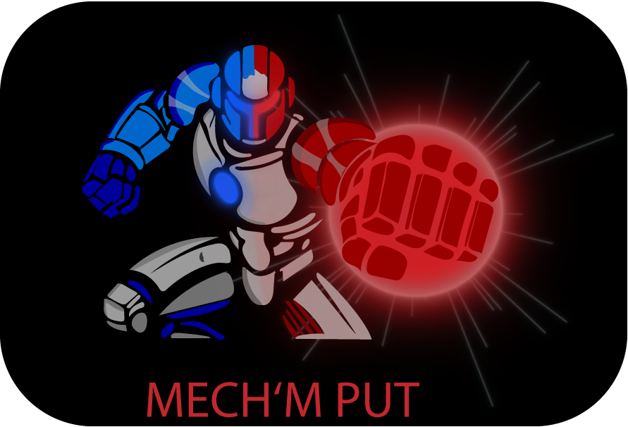
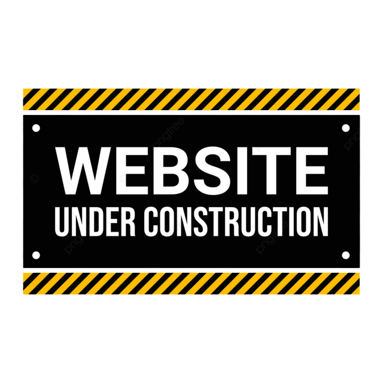

Über Mich
Vom Gartencenter zur Spieleentwicklung!
Sieben Jahre lang hab ich Kunden beraten, organisiert und Probleme gelöst. 2024 hab ich den Absprung gewagt und meine Umschulung zum Game- und Multimedia-Entwickler gestartet. Heute stecke ich täglich in Unity, C# und Blender. Was aus meinem alten Job geblieben ist? Der Blick fürs Detail, ein Faible für saubere Strukturen und die Gewissheit, dass am Ende geliefert wird.
Skills
Unity
Unity ist mein Spielplatz. Seit 2024 baue ich hier Prototypen und Gameplay-Mechaniken, von Movement über Gegner-KI bis zu Inventar-Systemen. Ich arbeite mit Scriptable Objects, Events und Prefab-Workflows und achte zunehmend auf saubere Architektur. Am meisten Spaß macht der Moment, wenn ein System zum ersten Mal so funktioniert wie gedacht.
C#
C# ist meine Sprache. Von OOP über Interfaces und Generics bis zu eigenen Editor Tools in Unity. Ich schreibe lieber etwas länger an einer sauberen Lösung, als mich später durch Spaghetti Code zu wühlen. Modular, lesbar, wartbar.
Blender
In Blender bewege ich mich auf solidem Grundniveau. Ich erstelle einfache 3D-Modelle, kümmere mich um UV-Mapping und baue kleine Animationen für meine Prototypen. Texturing und Lighting sind die Bereiche, in denen ich gerade dazulerne. Genug, um meine Ideen umzusetzen, und mit klarem Plan, wo ich noch besser werden will.
Aseprite
Mit Aseprite mache ich gerade meine ersten Schritte in der Pixel-Art. Ich probiere mich an Sprites, einfachen Animationen und UI-Elementen und lerne dabei Stück für Stück dazu. Idle- und Walk-Animationen reizen mich besonders, und mit jedem Versuch wird das Shading ein bisschen besser.
MagicaVoxel
MagicaVoxel ist mein Werkzeug für Voxel Art. Hier baue ich 3D Assets in einem klaren, charmanten Würfel Stil, die ich später in meine Spiele einbinde. Schnell, intuitiv und richtig gut geeignet für stimmige Game Assets ohne viel Schnickschnack.
Meine Projekte
MechmPut

under Construction

under Construction
Riesenrad
Kontakt
Lass uns reden
Du suchst einen motivierten Unity Entwickler, hast ein Projekt im Kopf oder willst einfach Hallo sagen? Schreib mir, ich antworte so schnell ich kann.
E-Mail schreiben oder direkt hier